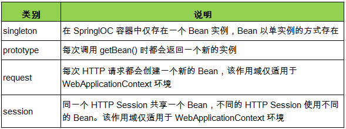

继承
Spring 允许继承 bean 的配置 , 被继承的 bean 称为父 bean. 继承这个父 Bean 的 Bean 称为子 Bean子 Bean 从父 Bean 中继承配置, 包括 Bean 的属性配置 覆盖 从父 Bean 继承过来的配置若只想把父 Bean 作为模板, 可以设置 <bean> 的abstract 属性为 true , 这样 Spring 将不会实例化这个 Bean并不是 <bean> 元素里的所有属性都会被继承 . 比如: autowire, abstract 等.abstract 必须设为 true
新开一个包，com.zhouxingchi,新建一个Main.java类1
2
3
4
5
6
7
8
9
10
11
12
13
package com.zhouxingchi;
import org.springframework.context.ApplicationContext;
import org.springframework.context.support.ClassPathXmlApplicationContext;
import com.jay.Address;
public class Main {
public static void main(String[] args) {
ApplicationContext ctx = new ClassPathXmlApplicationContext("beans-relation.xml");
Address address = (Address)ctx.getBean("address");
System.out.println(address);
address = (Address)ctx.getBean("address2");
System.out.println(address);
}
}
在src文件夹下新建一个bean配置文件，取名beans-relation.xml:1
2
3
4
5
6
<!-- 抽象bean: bean的abstract属性为true的bean，这样的bean不能被IOC容器实例化，只能被继承 -->
<!-- 若某一个bean的class属性没有指定，则该bean必须是一个抽象bean -->
//<bean id="address" class="com.jay.Address" p:city="nanjing" p:street="应天大街" abstract="true"></bean>
<bean id="address" class="com.jay.Address" p:city="nanjing" p:street="应天大街"></bean>
<!-- bean 配置的继承：使用 bean 的 parent 属性指定继承哪个 bean 的配置 -->
<bean id="address2" p:city="nanjing" p:street="奥体大街" parent="address"></bean>
注意：如果abstract="true"，则该bean为抽象bean，不能被实例化，会报异常
依赖
Spring 允许用户通过 depends-on 属性设定 Bean 前置依赖的Bean ，前置依赖的 Bean 会在本 Bean 实例化之前创建好如果前置依赖于多个 Bean，则可以通过逗号，空格或的方式配置 Bean 的名称
beans-relation.xml:1
2
3
4
5
<bean id="car" class="com.jay.Car" p:brand="玛莎拉蒂" p:price="1800000"></bean>
<!-- 要求在配置Person时，必须有一个关联的car！换句话说，Person这个bean依赖于Car这个bean -->
<bean id="person" class="com.jay.Person" p:name="周星驰" p:address-ref="address"
p:car-ref="car" depends-on="car">
</bean>
Main.java:1
2
Person person = (Person)ctx.getBean("person");
System.out.println(person);
注意：如果被依赖的bean不存在，则报异常
bean的作用域
在 Spring 中, 可以在 <bean> 元素的 scope 属性里设置 Bean 的作用域.默认情况下, Spring 只为每个在 IOC 容器里声明的 Bean 创建唯一一个实例, 整个 IOC 容器范围内都能共享该实例 ：所有后续的 getBean() 调用和 Bean 引用都将返回这个唯一的 Bean 实例.该作用域被称为 singleton, 它是所有 Bean 的默认作用域.
1
2
3
4
public Car() {
super();
System.out.println("constructor...");
}
src文件夹下新建个beans-scope.xml配置文件：1
2
3
4
5
6
7
8
9
<!--
使用bean的scope属性来配置bean的作用域
singleton:默认值。容器初始时创建 bean 实例，在整个容器生命周期只创建这一个bean
prototype:原型的，容器初始化时不创建bean的实例，而在每次请求时创建一个新的bean实例，并返回
-->
<bean id="car" class="com.jay.Car" scope="prototype">
<property name="brand" value="玛莎拉蒂"></property>
<property name="price" value="1800000"></property>
</bean>
Main.java:1
2
3
4
5
6
7
8
9
public class Main {
public static void main(String[] args) {
ApplicationContext ctx = new ClassPathXmlApplicationContext("beans-scope.xml");
// 下面的代码注释掉，运行起来可以直观看到singleton和prototype的区别
//Car car = (Car) ctx.getBean("car");
//Car car2 = (Car) ctx.getBean("car");
//System.out.println(car == car2); // true
}
}
运行上面代码可以看到，当scope=